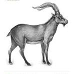

Una subespecie de cabra salvaje que habitó los montes del norte de España hasta su reciente extinción en el año 2000.
Descripción de la Cabra Montés

Extinto: Año 2000.
Ubicación: Pirineos (España).
Causa: Caza excesiva y baja variabilidad genética.
La cabra montés de los Pirineos, también conocida como bucardo, era una subespecie de cabra salvaje adaptada a las duras condiciones montañosas. Su desaparición marcó un hito en la conservación de especies en Europa.
Era una especie muy especializada, adaptada a los climas fríos y escarpados de las montañas. Su número fue disminuyendo rápidamente en el siglo XX hasta que sólo quedaba un ejemplar hembra, llamada "Celia".
Extinción y clonación
En enero del año 2000, la última cabra montés fue hallada muerta por la caída de un árbol. Fue declarada oficialmente extinta ese mismo año.
Sin embargo, en 2003, científicos españoles lograron clonar a la cabra utilizando material genético de Celia. El clon nació, pero falleció a los pocos minutos por problemas pulmonares. Fue el primer caso de una especie extinta clonada, aunque sin éxito a largo plazo.
Lecciones de conservación
La historia del bucardo es un ejemplo claro de lo que sucede cuando no se toman medidas de conservación a tiempo. Aunque existieron programas para salvarla, llegaron demasiado tarde.
Actualmente, se estudian nuevas técnicas genéticas que podrían permitir revivir especies extintas, pero la mejor forma de proteger la biodiversidad sigue siendo la conservación preventiva.